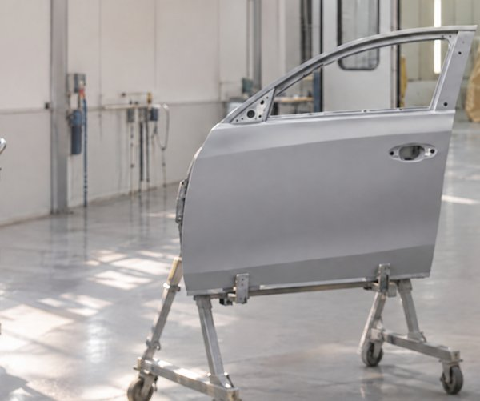

✓16:31:10
Marcel
Portière avant gauche, apprêt. Photo rangée dans le fil du chantier.
Marcel
C’est fini pour aujourd’hui, ou la voiture part ?
🌙Fin de journée
🚗Terminé, elle part
Pour l’atelier peinture

Marcel
Portière avant gauche, apprêt. Photo rangée dans le fil du chantier.
Marcel
C’est fini pour aujourd’hui, ou la voiture part ?